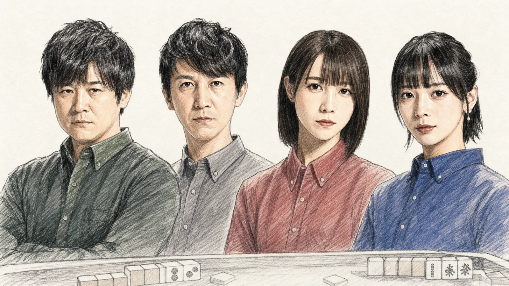
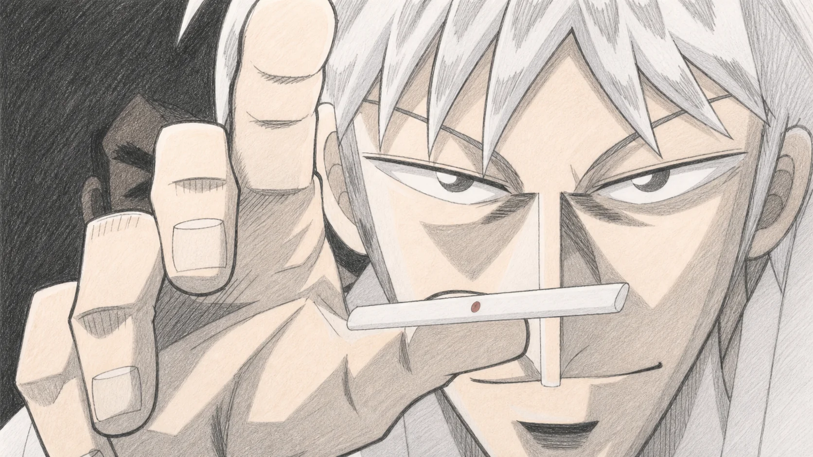
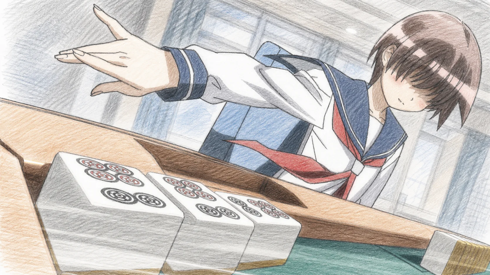
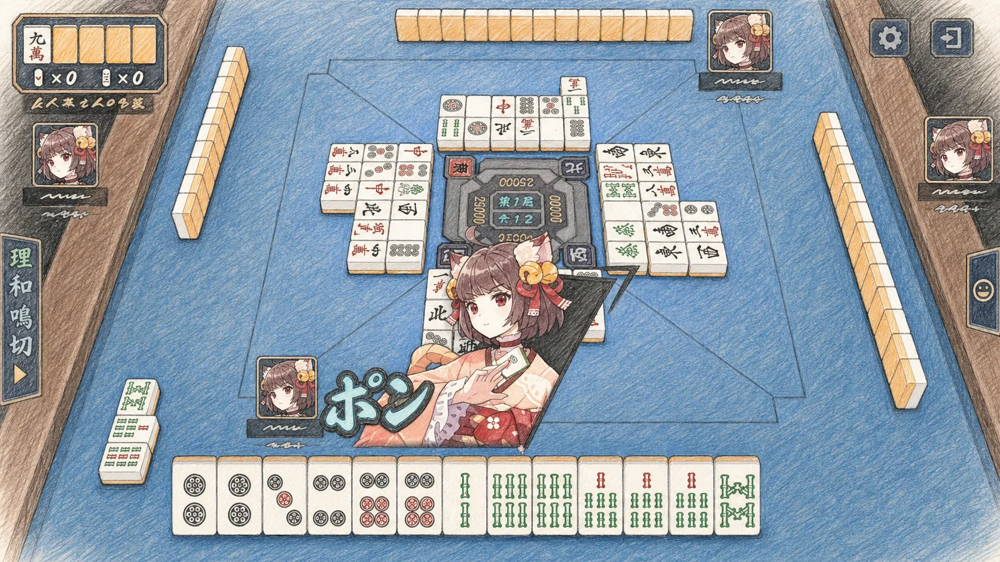
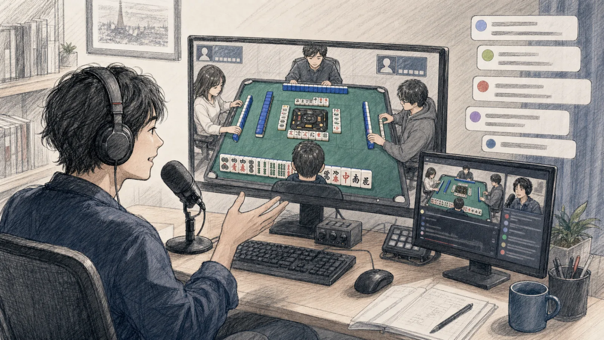
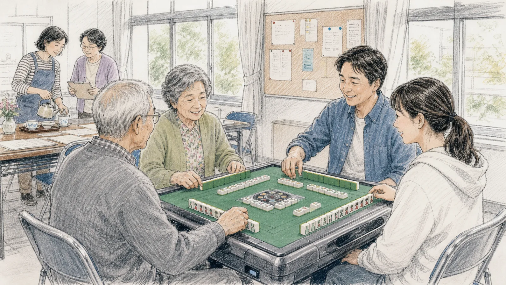

麻将从哪里来，
又是怎么到日本的？
麻将起源于中国，到了明治末期传入日本，最初只在海外归国者、知识分子和少数城市爱好者之间流传。
现代麻将逐渐成形
麻将的牌张、组合和基本玩法在中国发展成熟，之后才陆续传到日本、欧美等地。
日本留下早期实物
名川彦作从海外带回一副麻将牌，成为研究麻将早期传入日本时经常引用的实物资料。
从少数人的爱好走向城市
大正末到昭和初，麻将社团、入门书和雀庄陆续出现，越来越多人开始认识这项游戏。
一项舶来的游戏，
怎么变成了“日式麻将”？
麻将在日本普及后，逐渐形成了立直、宝牌和“一翻缚”等本地规则，雀庄、漫画和网络对战也改变了人们接触麻将的方式。
雀庄成为城市里的新空间
麻将先在知识分子、商人和城市爱好者之间流行，随后出现专门提供牌桌的雀庄。人们来这里打牌，也聊天、交朋友。
麻将进入大众故事
战后，雀庄数量增加，麻将也进入小说、杂志和漫画。1969 年开始连载的《麻雀放浪记》，让更多读者通过故事认识了雀庄和牌桌上的人际关系。
“健康麻将”改变了另一种印象
日本健康麻将协会提出“不赌博、不喝酒、不吸烟”，让麻将走进白天的活动场地、社区教室和老年人的日常生活。
牌桌从店里搬到网上
街机和网络对战让人们不必凑齐四个人，也能随时开局。麻将开始和段位、赛事直播、玩家社群联系在一起。
今天的日本麻将，
已经不只有雀庄
今天的日本麻将常见于职业比赛、动漫游戏、网络对战和社区健康麻将，这些不同入口大多使用相近的日式立直规则。
赛事发展：职业联赛与代表选手
2018 年开赛的 M.LEAGUE，是日本职业麻将近年最明显的变化。企业组建俱乐部，职业雀士穿队服上场，比赛有固定赛季、积分和季后赛。2025—26 赛季共有 10 支队伍，选手来自 5 个职业麻将团体。

职业联赛扩大以后，选手本人也成为观众认识日本麻将的入口。多井隆晴「最速最強」在 1995 年进入职业赛场，后来参与创立 RMU 并担任代表；佐々木寿人「魔王」在成为职业雀士前已经积累了大量实战经验，之后拿到凤凰位、麻雀日本系列等重要冠军。两人都是日本职业麻将中长期活跃的代表选手。
近年受到关注的选手也有不同的经历。伊達朱里紗「朱きヴァルキュリア」原本是一名声优，出演《咲-Saki- 全国篇》后进一步学习麻将，2019 年通过职业测试，并在 2022—23 赛季获得常规赛个人第一；岡田紗佳「完全武装アフロディーテ」以时装模特身份进入大众视野，2017 年成为职业雀士，此后一直同时活跃在电视、网络节目和职业赛事中。
日式立直麻将也在向海外传播。World Riichi Championship 自 2014 年起每三年举办一次，2025 年在东京举行，下一届计划于 2028 年在纽约举行。来自不同国家的职业和业余选手，会在相对统一的规则下比赛。
文化传播：很多人先认识角色，后来才认识规则
麻将规则并不简单。很多人不是先读规则书，而是先在漫画、动画、直播或手机游戏里看到麻将。漫画和动画先让一局牌有了人物和故事，游戏让观众自己坐上牌桌，直播又让大家听见职业选手和玩家是怎样判断一张牌的。
『アカギ』
《斗牌传说》
2005 年 10 月，日本电视台开始播出改编自福本伸行漫画的《斗牌传说》。故事从 1958 年的地下麻将开始：还不懂麻将的少年赤木茂突然坐上赌桌，并用对危险和人心的判断压倒经验丰富的对手。它没有急着给观众讲完整规则，而是把镜头停在一张危险牌、一只迟迟没有落下的手，以及人物不断变化的表情上。下注越抬越高，人物的犹豫和试探也越来越明显，一次普通的出牌就这样被拍成了悬疑片里的关键选择。
这让不懂麻将的观众也能跟上故事：他们也许不知道某副牌能得多少分，却能看出谁已经害怕、谁准备冒险，又是谁在故意让对手产生误判。日本电视台后来公布，本作在当时的深夜动画中取得了约 4% 的较高收视率。对许多从未去过雀庄的人来说，《斗牌传说》第一次清楚地说明，麻将不只是在凑牌，也可以是一场围绕胆量、判断和欺骗展开的心理战。
『咲-Saki-』
《咲-Saki-／天才麻将少女》
四年后出现的《咲-Saki-》，选择了完全不同的方向。漫画从 2006 年开始连载，电视动画于 2009 年 4 月开播。故事把牌桌搬进高中麻将部，又把比赛做成地区预选和全国大赛。宫永咲、原村和以及不同学校的选手依次上场，每个人都有容易辨认的打法，有些能力甚至带着少年漫画式的夸张。
从这一刻开始，观众关注的就不只是某一局谁赢了。他们会记住不同学校，关心前一位队员留下多少分，也期待下一位队员能不能逆转。麻将原本常和成年人、雀庄甚至赌博联系在一起，《咲-Saki-》却把它变成了可以支持队伍和角色的校园竞技。连载 15 周年时，官方公布相关系列累计发行量已经超过 1000 万册，并发展出多部电视动画、真人剧和电影。它的影响不只在于让麻将显得更年轻，也让“看麻将”变得很像追一部体育动画。
游戏和直播，让观众真正坐上牌桌
SEGA MJ
街机连上全国玩家
动画让人产生“我也想试一局”的念头，网络游戏则真正解决了去哪里找人打牌的问题。2002 年推出的 SEGA《MJ》把街机厅接入全国网络，坐在不同城市的玩家可以自动匹配，也可能在游戏里遇到职业雀士。実況、和牌特效、段位和全国赛事又给传统麻将加上了电子游戏的节奏。从此，想打麻将不一定要先约齐四个人，也不一定要走进雀庄。
雀魂
先喜欢角色，再学习规则
到了 2019 年，《雀魂》又把入口往前推了一步。它在 4 月推出日本网页版本，同年 11 月登陆手机，正式的立直麻将规则外面包着动画角色、知名声优、好感度和装扮系统。很多玩家也许最初只是喜欢某个角色或声音，真正开始匹配后，才慢慢记住立直、宝牌和各种役。它没有把麻将简化成另一种游戏，而是用熟悉的二次元形式，降低了第一次坐上牌桌时的陌生感。

& EVENT
对局变成可以一起看的内容
在线麻将普及之后，一局牌也很自然地进入了直播。主播一边出牌一边说明自己的判断，观众则在评论区争论应该进攻还是防守；职业雀士、声优和 VTuber 也开始出现在同一场线上比赛或线下活动里。过去只属于四名玩家的牌局，现在可以同时被许多人观看、讨论和复盘。有人先看直播，再下载游戏，也有人在游戏里学会规则之后，开始关注真正的职业比赛。

屏幕之外，还有社区里的麻将
与此同时，健康麻将仍在日本各地举办，并进入老年活动、自治体项目和跨世代交流。新手可以在没有金钱输赢和烟酒环境的场地里学习，年长者也把固定活动当作与人见面的机会。网络游戏扩大了麻将的入口，社区活动则继续保留面对面交流的功能，两者并没有互相取代。

从明治末期的一副舶来麻将牌，到今天固定播出的职业联赛，麻将在日本已经走过一百多年。它最初只流行于少数爱好者之间，后来随着雀庄、入门书和相关组织增加，逐渐进入更多城市。立直、宝牌和“一翻缚”等规则也在这个过程中被固定下来，形成了今天常见的日式立直麻将。
今天，人们接触麻将的方式已经很不一样。有人观看 M.LEAGUE，有人从《咲-Saki-》《雀魂》或直播开始，也有人在社区的健康麻将活动中学习。职业比赛、动漫游戏、网络直播和社区活动同时存在，让不同年龄和兴趣的人都能找到适合自己的入口。
入口变多了，牌桌本身并没有消失。无论比赛出现在电视、手机还是社区活动室里，玩家仍然要围坐在牌桌四周，摸牌、出牌、判断，也和身边的人交流。日本麻将这些年的变化，说到底，是让同一副牌进入了更多生活场景。
OPTIONAL / 玩法补充 想要看看日本麻将是怎么玩的吗？ 点击展开 · 入门约 5 分钟
第一次接触日本麻将，不需要先背役种表，也不用手算点数。先弄清牌有哪些、每回合做什么、怎样才算和牌，就能看懂一局。后面的特殊牌型、完整振听和计分规则已经单独收起，可以以后再看。
牌有哪些
萬子
マンズ从一万到九万。
筒子
ピンズ用圆点表示一到九。
索子
ソーズ用竹索表示一到九。
东、南、西、北四种。
白、发、中三种。
34 种牌，每种 4 张，共 136 张。
一局怎么进行
开局
四个人各拿 13 张牌。庄家多拿一张并先舍牌，之后按东 → 南 → 西 → 北依次行动。
自己的回合
记住一个基本动作：先摸一张，再舍一张。这样一轮轮进行，直到有人和牌或牌山摸完。
没人和牌
牌山摸完仍然没人和牌，这一局就结束，叫作流局。点数处理可以交给游戏自动完成。
怎样才算和牌
完成形：14 张
4 MELDS + 1 PAIR大多数和牌由四组顺子或刻子，再加一对相同牌组成。但牌形完成还不够，至少还要有一个“役”。役可以先从第五节的三个常见例子开始认识。
吃、碰、杠和两种和牌方式
吃CHI
拿上家刚打出的牌，与手里的两张牌组成顺子。吃完后直接舍一张牌。
碰PON
任何一家打出某张牌时，用手里两张相同牌组成刻子。碰完后直接舍一张牌。
杠KAN
四张相同牌组成杠。完成后需要补摸一张牌；具体种类可以等熟悉基本流程后再学。
自摸TSUMO
自己摸到最后一张需要的牌并和牌。
荣和RON
别人打出的牌让自己完成和牌。
吃、碰会把部分手牌公开，也可能让某些役失效。第一次玩时，不确定就先不吃、不碰，通常更容易做成立直。
先记住三个常见的役
役就是规则认可的和牌条件。役有很多，但第一次玩只要先认识下面三个，已经足够开始练习。
立直
没有吃、碰，手牌只差一张就能完成时，可以宣布立直。这是新手最容易使用的役。
断幺九／タンヤオ
整副牌只使用 2 到 8 的数牌，不出现 1、9 和字牌。
役牌
白、发、中凑成三张相同牌就是一个役；东、南、西、北则要符合自己的座位风或本场风。
宝牌与振听
宝牌只负责加分
宝牌可以让一手牌分数更高，但宝牌本身不是役。没有其他役时，即使有宝牌也不能和牌。
自己打过的和牌张
如果自己的舍牌里出现了当前等待的任意一张牌，就不能用别人的舍牌荣和，但仍然可以自摸。
第一次玩先记住：每回合摸一张、舍一张；和牌需要完整牌形和至少一个役；不确定要不要吃碰时，可以先保留门前状态。点数让游戏自动计算即可。
ADVANCED / 可稍后阅读 想继续了解进阶规则吗？ 这里收录特殊牌型、完整振听、点数计算和半庄流程。 点击展开 · 约 6 分钟
赤五与王牌区
赤五牌
部分五万、五筒和五索会换成红色版本，牌的总数不会增加。赤五通常可以增加番数，但有些比赛不使用。
王牌区
牌山末端的 14 张称为王牌，用来放置宝牌指示牌，也保存开杠后补摸的岭上牌。
其他常见役与特殊牌型
门前清自摸
没有吃、碰或明杠，并由自己摸到最后一张牌。
平和／ピンフ
四组都是顺子、雀头不是役牌、最后为两面等待。
对对和／トイトイ
四组面子全部由刻子或杠组成，可以通过碰来完成。
七对子／七対子
由七组不同的对子组成，不使用普通的“四组面子＋一对雀头”结构。
国士无双／国士無双
集齐三种数牌的 1、9 和全部七种字牌，再让其中一种成对。
立直与宝牌的完整规则
立直宣言
依次完成说出“リーチ”、横放宣言牌、交出 1000 点棒三个动作。
立直后的限制
立直以后通常只能摸切，不能再吃碰，暗杠也需要满足严格条件。
宝牌指示牌
指示牌的下一张才是宝牌。例如四万是指示牌，五万才是宝牌。
里宝牌与杠宝牌
立直和牌后可以翻开里宝牌；有人开杠时通常还会增加杠宝牌指示牌。
振听的三种情况
振听是日式麻将最重要的限制之一。它只禁止荣和，不禁止自摸。一旦处于振听，即使别人打出正确的和牌张，也不能喊“ロン”；之后若自己摸到和牌张，仍可以自摸。
振听也是防守的基础：对手自己已经舍过的牌，不可能再被该对手荣和。面对立直时，这类“现物”通常是最可靠的安全牌。
舍牌振听
自己的牌河里存在任意一张当前和牌张。只要等待没有改变，便持续不能荣和。
同巡振听
没有荣和别人刚打出的和牌张后，在自己下一次摸牌前暂时不能荣和其他人的牌。
立直后见逃
立直以后放过一次可以荣和的牌，本局剩余时间都不能再荣和，只能等待自摸。
例：你同时等待三万和六万，但自己的舍牌区里已经有三万，那么六万也不能荣和；只有改变等待，或自己摸到三万／六万时才可能完成和牌。
点数计算与支付
计分先数番，再数符。役和宝牌提供番数；刻子、杠、雀头性质、等待方式以及门前荣和等条件提供符。大多数牌型从 20 符开始，最后向上进位到 10 符；七对子固定按 25 符处理。
番和符共同决定基本点，再根据庄家／闲家以及荣和／自摸决定付款方式。实际对局通常由自动麻将桌或游戏完成计算，但理解下面的层级，已经足以判断一手牌大概有多大。
或低番高符
荣和支付
荣和的基本点数由打出和牌张的放铳者独自承担。
自摸支付
闲家自摸时庄家支付较多；庄家自摸时三名闲家支付相同金额。
庄家点数
相同番符下，庄家点数约为闲家的 1.5 倍，因此坐庄时进攻和防守的压力都更大。
一个具体例子：闲家以 30 符 3 番荣和时通常得到 3900 点；若自摸，则庄家支付 2000 点、另外两家各支付 1000 点。相同牌值由庄家和牌时，荣和通常是 5800 点，自摸则三家各付 2000 点。场上每有一本场，下一次和牌还会增加 300 点。
半庄流程与连庄
完整的半庄通常包含东场和南场。每位玩家依次做一次庄家，因此正常情况下有东一局至东四局、南一局至南四局。网络上的“东风战”只进行东场，时间更短。
- 东一局开始：东家先行动，四人按照座位风依次摸牌和舍牌。
- 有人和牌：立即展示手牌，确认役、番、符和宝牌，再进行点数支付。
- 无人和牌：牌山摸尽后检查听牌，处理不听罚符，并判断庄家是否连庄。
- 庄位轮换：没有满足连庄条件时，原南家成为新东家，局数向前推进。
- 南四局结束：完成最后结算，比较四人的总点数；点数最高者取得本场第一名。
途中流局
九种九牌、四风连打、四家立直、四杠散了和三家荣和是否触发途中流局，会因平台与比赛规则不同而变化。
和牌成立条件
牌形已经完成、至少拥有一个役、荣和时没有振听、声明发生在合法时点。这四项都满足，才是一手有效的和牌。